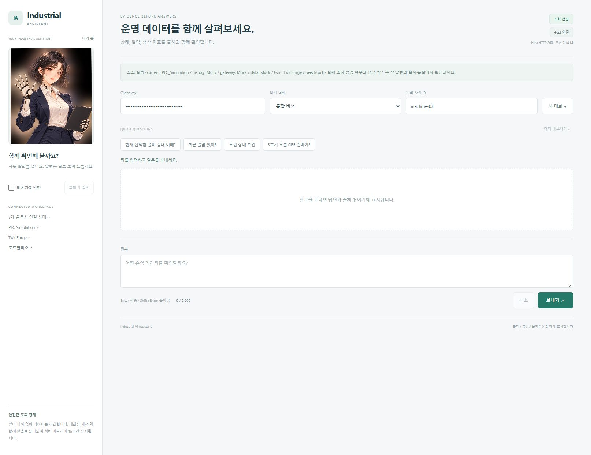

확인된 동작
2026-10-23 C# 검사 52개와 결정적 채팅 smoke PASS. PLC/Twin HTTP adapter를 구성하고 PLC 실제 읽기 응답을 확인했습니다. 다른 네 출처와 Fake 생성 방식을 구분합니다. 과거 2026-10-09 격리 통합 29개는 별도 실행입니다.
PROJECT 06 / READ & EXPLAIN
현장의 질문에 출처가 있는 답변을
THE PROBLEM
상태·알람·이력·효율을 질문할 때 답변의 출처, 품질과 불확실성도 함께 확인해야 합니다.
THE WORKSPACE
제품별 읽기 adapter와 조회 도구로 근거를 구성합니다. 이번 로컬 실행은 PLC/Twin HTTP 소스를 구성하고 다른 네 출처는 Mock으로 유지합니다. 답변·지식·음성은 Fake이며 실제 조회 성공 여부는 각 답변의 출처와 품질에서 확인합니다.
DESIGN DECISIONS
FROM OVERVIEW TO HANDS-ON
상태를 묻고 출처를 검토해 근거와 함께 보관하기
PLC HTTP 조회 확인 · 답변 문장 생성은 Fake 방식

화면을 보며 따라가기2026-10-23 C# 검사 52개와 결정적 채팅 smoke PASS. PLC/Twin HTTP adapter를 구성하고 PLC 실제 읽기 응답을 확인했습니다. 다른 네 출처와 Fake 생성 방식을 구분합니다. 과거 2026-10-09 격리 통합 29개는 별도 실행입니다.
명시적 논리 자산 매핑과 실제 읽기 출처의 provenance·결측·staleness, 상류 권한 오류 분류를 강화합니다.
화면은 로컬 개발 환경에서 직접 캡처했습니다. PLC → Gateway → Twin 읽기 흐름은 2026-10-09 격리 fixture에서 확인했습니다. 일곱 제품의 운영 통합, 실장비 제어, 정상 OEE 생산 흐름과 AssetHub 승인 API는 확인 범위에 포함하지 않습니다.